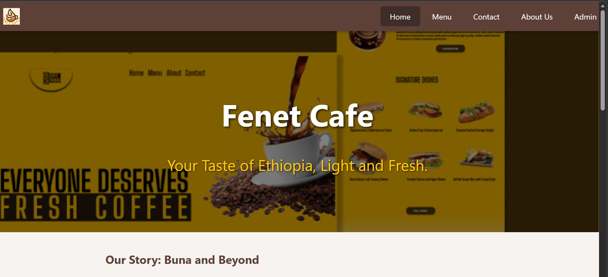
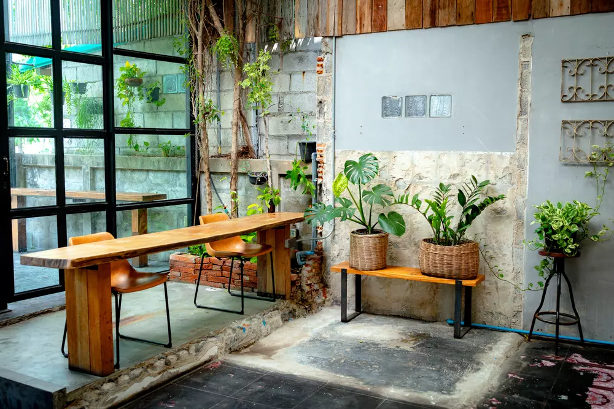

Fenet Cafe
Ordering and reservation platform with admin tools for menu, inventory, and sales tracking.

Customer view
Menu browsing and reservation flow tuned for quick ordering.

Clean environment
Beyond organic brews, it’s the dedication to ethical sourcing, waste reduction, and environmental care..
React
Node.js
Express
MongoDB
- Auth-protected admin dashboard for menu + stock.
- Customer-facing ordering and booking flows.